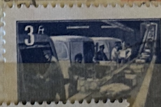
| SOURCE | TITLE| IMAGE MATCH | click to source page |
| Find Your Stamps Value | Value of 20f orange ink old locomotive train stamps | 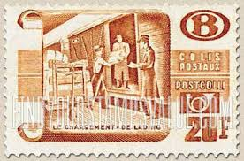 |
| Poppe Stamps | Poppe Stamps: Belgium - Railroad, 1950, P1311, Workers - stamps for sale by theme and country | 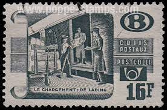 |
| Find Your Stamps Value | Value of colis postal stamps | 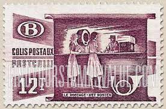 |
| Poppe Stamps | Poppe Stamps: Belgium - Railroad, 1950, P1311, Workers - stamps for sale by theme and country | 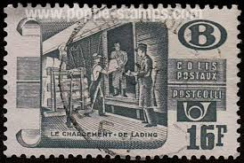 |
| Poppe Stamps | Poppe Stamps: Belgium - Railroad, 1950, P1311, Workers - stamps for sale by theme and country | 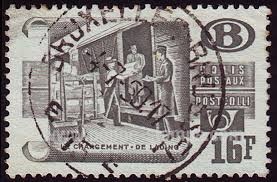 |
| Free stamp catalogue | Stamps from Guadeloupe - Freestampcatalogue.com - The free online stampcatalogue with over 500.000 stamps listed. | 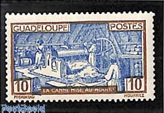 |
| Poppe Stamps | Poppe Stamps: Belgium - Railroad, 1950, P1311, Workers - stamps for sale by theme and country | 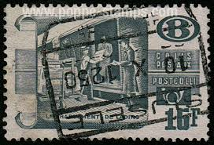 |
| Poppe Stamps | Poppe Stamps: Belgium - Railroad, 1950, P1311, Workers - stamps for sale by theme and country | 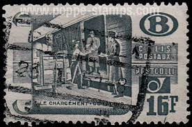 |
| Find Your Stamps Value | Valeur du timbre postage magyar posta vertel jòzsef | 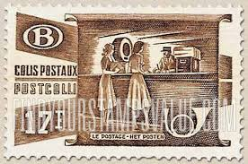 |
| Poppe Stamps | Poppe Stamps: Belgium - Railroad, 1950, P1311, Workers - stamps for sale by theme and country | 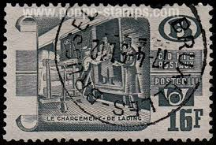 |
| Poppe Stamps | Poppe Stamps: Belgium - Railroad, 1950, P1311, Workers - stamps for sale by theme and country | 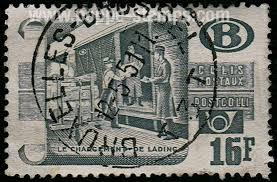 |
| Poppe Stamps | Poppe Stamps: Belgium - Railroad, 1950, P1312, Workers - stamps for sale by theme and country | 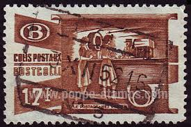 |
| Find Your Stamps Value | Value of postage revenue 1 shilling stamps | 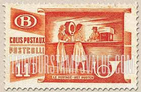 |
| stanleyhowlerjournal.co.uk | Stanley Howler Journal | 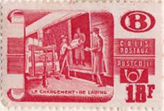 |
| Find Your Stamps Value | Value of australia postage five shillings stamps | 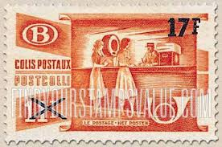 |
| Poppe Stamps | Poppe Stamps: Belgium - Railroad, 1950, P1311, Workers - stamps for sale by theme and country | 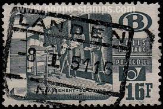 |
| Poppe Stamps | Poppe Stamps: Belgium - Railroad, 1950, P1312, Workers - stamps for sale by theme and country | 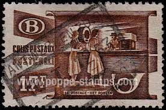 |
| Stamp Bears | Michael's French stamps | Stamp Bears | 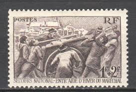 |
| Miraheze | Belgium – parcel post issues - Stamp Encyclopedia | 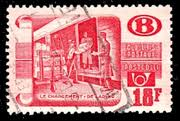 |
| Poppe Stamps | Poppe Stamps: Belgium - Railroad, 1950, P1311, Workers - stamps for sale by theme and country | 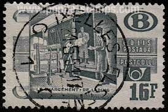 |
| eBay | Canada Stamp #1301a (1298-1301) "Second World War 1940" se-tenant BLK4 MNH 1990 | eBay | 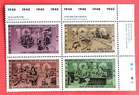 |
| jessicayogini.com | Battle Of Waterloo Belgium 1990 Stamp - Complete Issue Unmounted Mint Never Hinged MNH Collector Stamp | 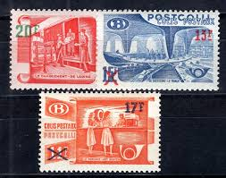 |
| eBay | Burkina Faso 1969 MNH Sc 193 Automatic Looms, ILO, 50th anniversary ** | eBay | 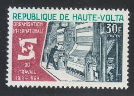 |
| eBay | Ivorian Postage Stamps for sale | eBay | 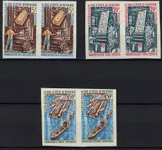 |
| HipStamp | Belgium Scott Q340 MH* 1953 Parcel Post 20fr opt on 18fr | Europe - Belgium & Colonies, Parcel Post Stamp / HipStamp | 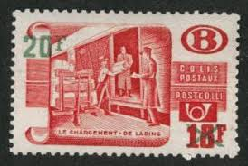 |
| French Philately | 1941 Yt 497 National Winterhelp Sc B112 - French Philately - Stamps of France for Sale | 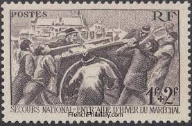 |
| Find Your Stamps Value | Value of 1973 twelve days of christmas stamp stamps | 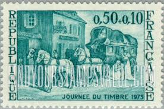 |
| mypianeta.de | Timbre Poste France 1890/1973 - Collection De Timbres Timbres De Collection | 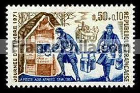 |
| Poppe Stamps | Poppe Stamps: Belgium - Railroad, 1950, P1311, Workers - stamps for sale by theme and country | 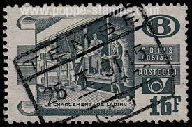 |
| eBay | BELGIUM Q339 - Mailing Parcel Post "Provisional" (pb68211) | eBay | 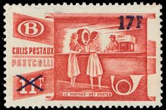 |
| Stamp Community Forum | Mailboxes On Stamps! - Page 8 - Stamp Community Forum | 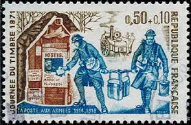 |
| eBay UK | Ivory Coast 1968 SG#302, 20f Raw Cotton And Reeling Machine Used #E84987 | eBay UK | 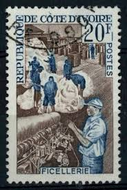 |
| BalkanAuction | Postage stamps | Philately | Collectibles | BalkanAuction | 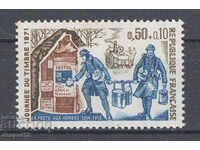 |
| Poppe Stamps | Poppe Stamps: Belgium - Railroad, 1950, P1311, Workers - stamps for sale by theme and country | 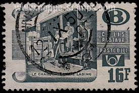 |
| eBay | 1348 for sale | eBay | 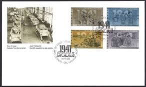 |
| Find Your Stamps Value | Value of kuk militar post 28 juni 1914 stamps | 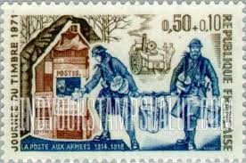 |
| Freestampcatalogue.com | Stamps from Upper Volta - Freestampcatalogue.com - The free online stampcatalogue with over 500.000 stamps listed. | 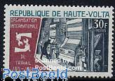 |
| Colnect | France : Stamps [Year: 1949] [1/8] : Colnect 📮 | 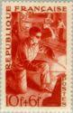 |
| eBay | St Pierre et Miquelon 1939-40, 40c Port de Saint-Pierre MNH, Yv 196 | eBay | 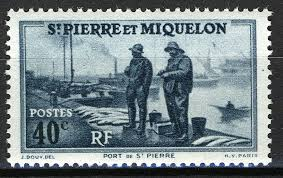 |
| Colnect | France : Stamps [Year: 1917] [1/2] : Colnect 📮 | 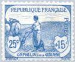 |
| eBay | France Num Yvert 497 ** MNH Secours National Year 1941 | eBay | 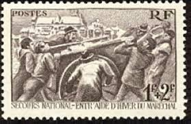 |
| eBay | Stamp Ivory Coast Naval Construction Industry N°298/300 New ** Luxury MNH | eBay | 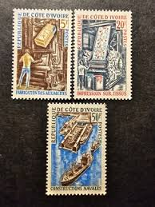 |
| eBay | Postal History France #B257 FDC Post Card Railroad Train Office Mail Car 1951 | eBay | 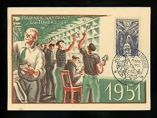 |
| eBay | France B257, hinged. Michel 897. Stamp Day 1951. Mail Car Interior. | eBay | 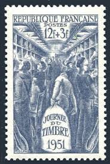 |
| BalkanAuction | Postage stamps | Philately | Collectibles | BalkanAuction | 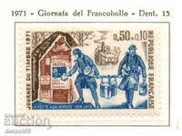 |
| HipStamp | Belgium Q332 Used BIN $0.50 | Europe - Belgium & Colonies, Parcel Post Stamp / HipStamp | 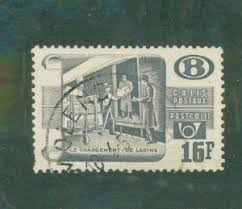 |
| eBay | 1914-16 Automobile Club of France - #6 | eBay | 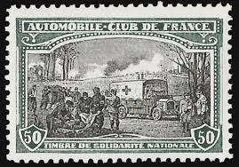 |
| Mystic Stamp | CB34a - 1949 French Morocco - Mystic Stamp Company | 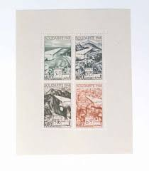 |
| photographyinphilately.com | Item no. S381 (proof) | Photography in philately | 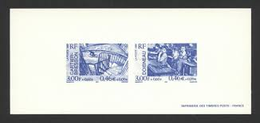 |
| Free stamp catalogue | Stamps from Ivory Coast - Freestampcatalogue.com - The free online stampcatalogue with over 500.000 stamps listed. | |
| eBay | France #YT823-YT826 MNH 1949 Workers Farmer Fisherman Miner [B233-B236] | eBay | |
| eBay | Travelstamps: France Stamps Scott #B257 Mail Car Interior 1951 Stamp Day MNH OG | eBay | |
| randyschollstamps.com | Randy Scholl Stamp Company | |
| HipStamp | Stamps - France _ Scott# B451 - Mint Hinged Set of 1 Stamp | Europe - France & Colonies, Semi-Postal Stamp / HipStamp | |
| eBay | France Yvert No 1671 ** Stamp Day 1971 | eBay | |
| FEPA News | Carnets de timbres dans l'air du temps – FEPA News | |
| efilatelija.lt | France 1951. Stamp Day | |
| STEVE LEVINE STAMPS-PLUS | FRANCE Scott # B 257, 1951 Stamp Day - SteveLevineStamps-Plus | |
| eBay | CANADA # 1298-1301 MNH World War II Block 1940-1990 | eBay | |
| French Philately | 1954 Yt 970-4 Luxury Products Sc 711-5 - French Philately - Stamps of France for Sale |